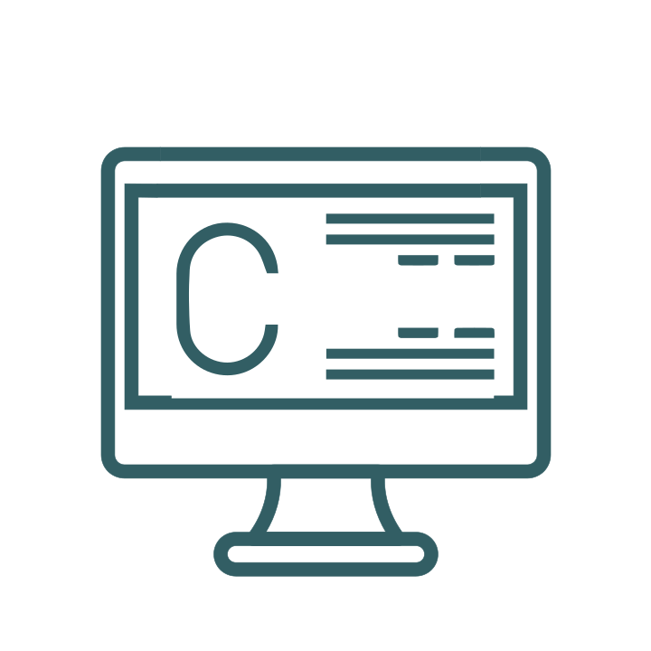

Курс: Программирование На С
Возраст: 12-16 лет
Требования: рекомендуется предварительное изучение Scratch
Описание:
Язык программирования СИ произвел огромное влияние на всю индустрию мира IT в целом. Его синтаксис лег в основу множества языков программирования, а гибкость, производительность и универсальность позволяют использовать его для решения абсолютно любых задач. Заложенные в данный язык принципы используются во всех современных языках. На курсе «Программирования на языке СИ» рассматриваются принципы написания валидного и оптимизированного кода на любых платформах, решения задач и описания алгоритмов. Учащиеся получают навыки отладки программ, хранения данных и использованию кода для описания реальных сущностей. В конце учебного периода, все слушатели обязательно защищают разработанные проекты и сдают строгие экзамены. Навыки, полученные в процессе обучения Курс «Программирование на языке СИ» обязателен к изучению всем, кто хочет связать свою жизнь с разработкой программного обеспечения, независимо от выбранного направления – будь то разработка сайтов, игр, мобильных приложений или банковских систем.
